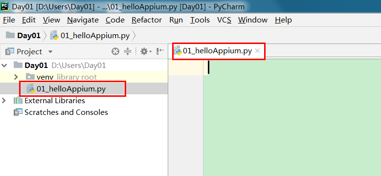
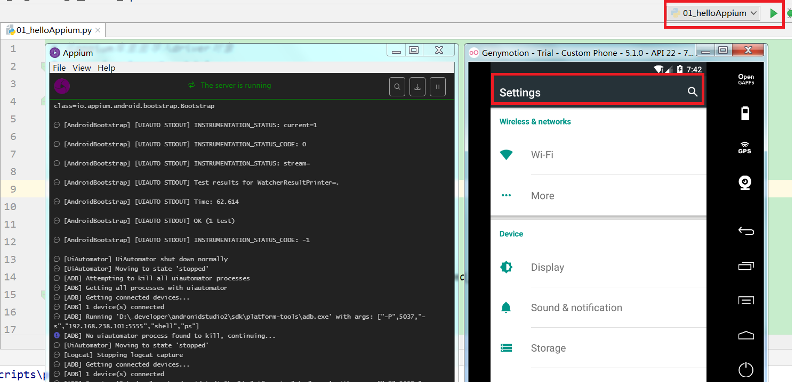

appium helloword(通过python编写脚本启动设置app应用)
1.打开PyCharm 创建一个新项目
在项目里面新建一个 hello.py文件 如下图

2.在hello.py文件中输入如下代码
# 从appium库里面导入driver对象
from appium import webdriver
# 导入time
import time
# server 启动参数
desired_caps = {}
# 设备信息
desired_caps['platformName'] = 'Android' #平台名称
desired_caps['platformVersion'] = '5.1' #平台版本
desired_caps['deviceName'] = '192.168.56.101:5555' #设备号
# app信息
desired_caps['appPackage'] = 'com.android.settings' #应用的包名
desired_caps['appActivity'] = '.Settings' #代表启动的activity
driver = webdriver.Remote('http://localhost:4723/wd/hub', desired_caps) #声明driver对象
# time.sleep(5)
# 关闭app driver对象不会关闭
# driver.close_app()
#关闭驱动对象
# driver.quit()
desired_caps常用参数:
platformName 平台的名称：iOS, Android, or FirefoxOS
platformVersion 设备系统版本号
deviceName 设备号 IOS：instruments -s devices，Android: adb devices
app 安装文件路径：/abs/path/to/my.apk or http://myapp.com/app
appActivity 启动的Activity
appPackage 启动的包
3. 启动Appium和 Android模拟器
4. 运行hello.py观看模拟器的设置应用是否被打开
